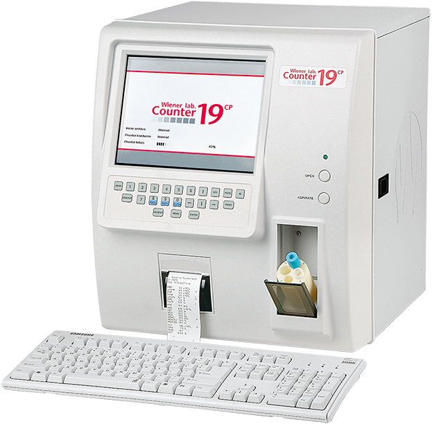

Wiener lab counter 19
Contador hematológico automatizado

DESCRIPCIÓN: Contador hematológico automatizado, cuantitativo, realiza el recuento diferencial de leucocitos para uso de diagnóstico “in vitro” en laboratorios clínicos.
CARACTERÍSTICAS:
Velocidad: 60 determinaciones/h. Hasta 35,000 pacientes en memoria.
Volumen de muestra: Sangre completa (13 uL) o sangre prediluida (20 uL).
Reactivos libres de Cianuro.
Se incluye: Impresora, teclado, lector de código de barras, supresor de picos.
Registro: 1239E2008 SSA
DATOS COMPLEMENTARIOS: Para información adicional comunicarse a:
WIENER LAB.
REPRESENTACIONES LABIN MÉXICO, S. A. de C.V.
Teléfonos: (55) 5524-0771, 5200-2500
Lada sin costo: 01 800-581-4616
e-mail: contacto@wiener-mex.com
www.wiener-lab.com.ar